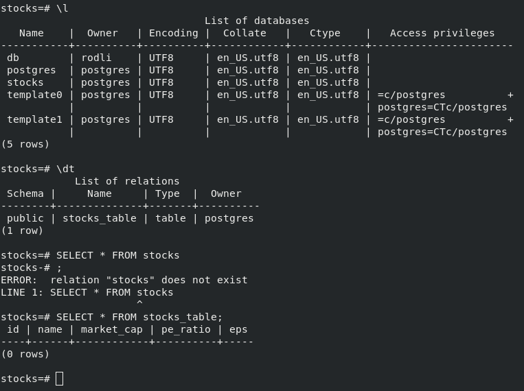

Verify table exists.
> SELECT * FROM database_name;

Insert data into table.
> INSERT INTO table_name(column_1, column_2, column_3)
VALUES (column_1_row_1_value, column_2_row_1_value, column_3_row_1_value);
Bloopers
Tried to login as user root, when the default admin user is postgres.
Used MYSQL command to check existing databases, instead of PSQL command.